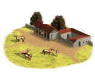
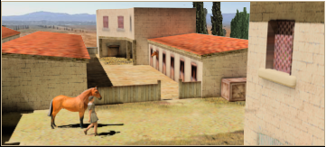
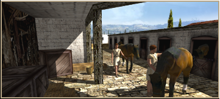

RTR: Imperium Surrectum
RTR: Imperium SurrectumHorse Trainer (Rural) chain
3 levels, each replacing the one before it — you upgrade in place rather than building alongside.
Horse Trainer (Rural) → Horse Breeder (Rural) → Fine Horses Exports (Rural)
Pictures are the game's own building art. Where a culture ships none of its own, the game falls back to another culture's, and that is what is shown here.
Levels at a glance
| Level | Cost | Build time | Minimum settlement | Upgrades to | Level | Cost | Build time | Minimum settlement | Upgrades to | ||
|---|---|---|---|---|---|---|---|---|---|---|---|
| Horse Trainer (Rural) | 2,500 | 3 | town | Horse Breeder (Rural) | Horse Breeder (Rural) | 5,000 | 5 | large town | Fine Horses Exports (Rural) | ||
 | Fine Horses Exports (Rural) | 15,000 | 8 | city | — |
Costs in denarii, build time in turns.
Fine Horses Exports (Rural)

Where we harness the power of the wild to serve our mighty armies (for a price)!
Gold glitters, but a fine horse inspires.
This region has become famous for its high-quality horses, steeds bred and trained to carry nobility and warriors alike with pride.
These aren’t mere beasts; they are symbols of status and tools of conquest. From heavy cavalry that strikes fear into enemy lines to noble mounts for parades, each horse here is a prized asset.
Taxes from wealthy buyers and foreign nobles fill the coffers, and generals eye these fine steeds to increase the cavalry ranks.
For with every hoofbeat, these horses bring prestige, power, and profit to the empire.
| Cost | 15,000 denarii | Build time | 8 turns | Minimum settlement | city |
What it does
- +3 trade income
- +18 taxable income
Show 1 effect that apply only in the circumstances shown
- +2 public order (happiness) — only when
factions { scythian, }
Horse Trainer (Rural)

Turning wild steeds into war-ready wonders.
To train a horse is to tame thunder on four legs.
Here, the delicate art of transforming wild stallions into loyal companions takes place. These trainers know that a horse is more than a beast of burden, it’s a partner in battle, a symbol of wealth, and a trusted friend in difficult times. With careful skill and a nose for the finest stock, the horse trainers craft steeds that make men and gods alike envious.
Soon, every soldier and noble dreams of riding a horse bred here, galloping into battle like the very wind.
| Cost | 2,500 denarii | Build time | 3 turns | Minimum settlement | town | Upgrades to | Horse Breeder (Rural) |
What it does
- +1 trade income
- +8 taxable income
Horse Breeder (Rural)

Breeding tomorrow’s champions, hoof by hoof.
This renowned stable produces steeds with strength, speed, and spirit, shaping each generation to be faster and mightier than the last. The breeder’s careful eye and experience yield a stock of horses that captivate nobles, and soon every hero worth his sword demands a steed from these lands.
These horses are fit for everything, from chariot races to the heat of battle, each hoofbeat resounding like thunder across the plains.
Wording varies by culture: 2 versions of this description exist in the game files.
| Cost | 5,000 denarii | Build time | 5 turns | Minimum settlement | large town | Upgrades to | Fine Horses Exports (Rural) |
What it does
- +2 trade income
- +16 taxable income
Show 1 effect that apply only in the circumstances shown
- +2 public order (happiness) — only when
factions { scythian, }